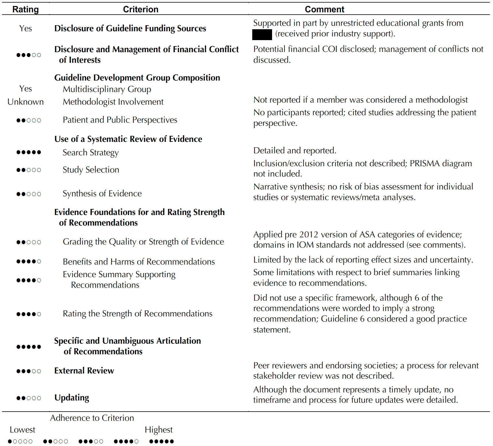
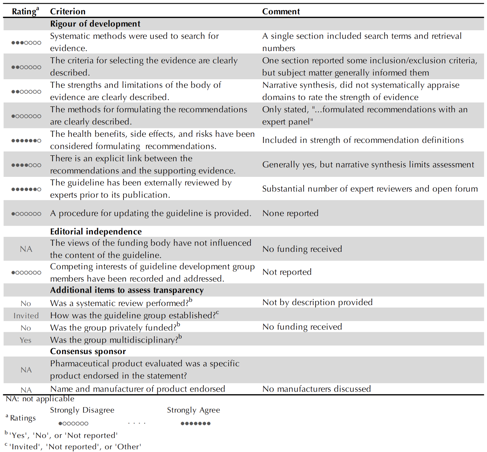

6 Support – External Guidance
Guidance documents submitted by external organizations for support from the ASA are reviewed by the CPP and a committee with content expertise. Support is offered in 3 categories:
Endorsement — The document should generally satisfy ASA’s guideline development requirements and there is general agreement with all recommendations in the document. Guidance developed with an official representative from the ASA and approved through governance procedures are considered in this category.
Affirmation of Value — External organization’s guidelines or practice parameters that have merit and value but either do not generally satisfy ASA’s guideline development requirements or there is not general agreement with all recommendations in the document. Statements and policy papers may be considered for affirmation of value.
No Endorsement or Affirmation of Value — The external organization’s document does not meet ASA guideline development requirements and is not felt to be of benefit to the ASA membership.
Although a complete description of the process for determining the category of support is beyond the scope here, the review conducted by the methodologists is outlined as it is an important function.
An objective methodological review of approaches used in developing guidance facilitates endorsement decisions. The purpose of the methodological review is not to offer a judgment on whether the guidance document should be endorsed or supported, but to provide a sufficiently detailed appraisal of the methods to allow informed decisions according to the administrative procedures.
The methodological review includes two main sections:
- Appraisal of conforming to standards for systematic review conduct (Eden, 2011) and developing recommendations (Graham, 2011) using the NEATS (Jue et al., 2019) tool (National Guideline Clearinghouse Extent of Adherence to Trustworthy Standards) for practice guidelines and AGREE-II (Brouwers et al., 2016) modified (Jacobs et al., 2014) for consensus statements.
- A narrative description of the limitations and strengths from a methodological perspective.
Depending on the scope and complexity, reviews are conducted by one or two methodologists.
Examples of the NEATS and modified AGREE-II appraisals


| Date | Modifications | Version | Note |
|---|---|---|---|
| 2023-09-12 | None | 0.1 | Initial version |